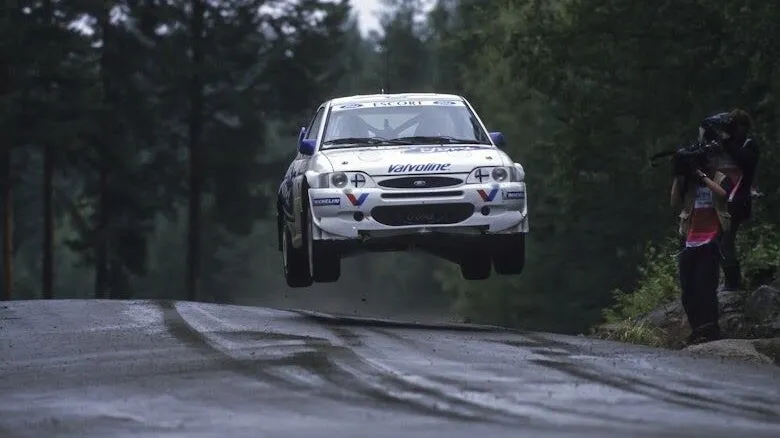
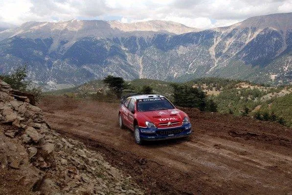
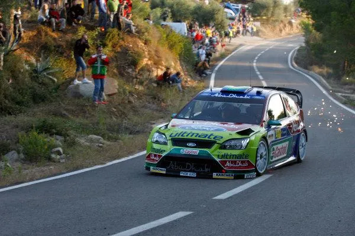
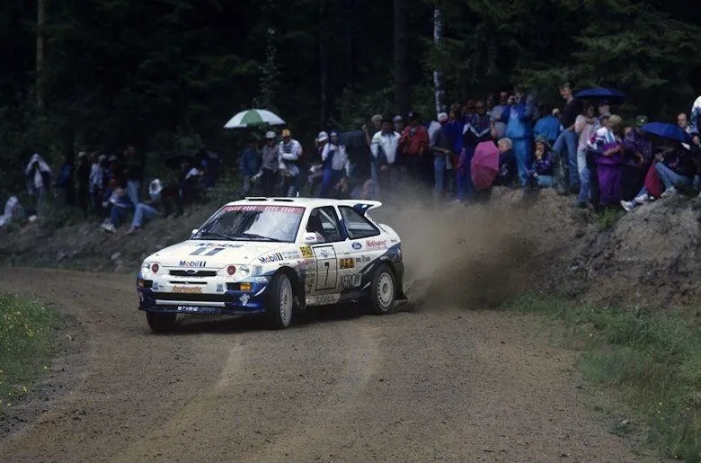
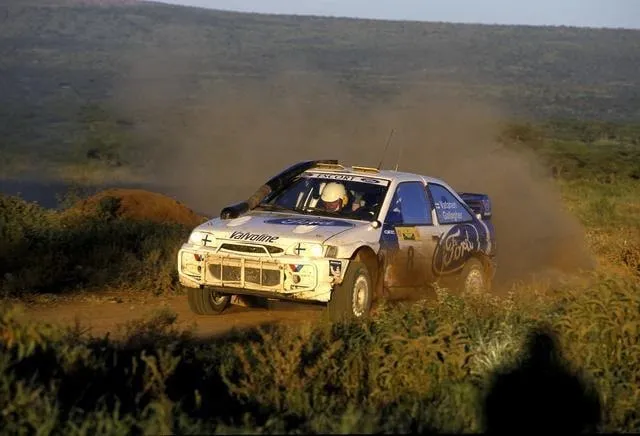
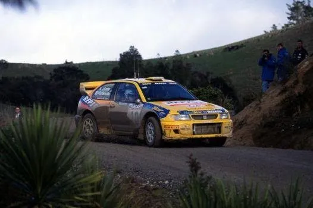

5 great Super Sub performances!
WRC has had its fair share of super subs along the years. Whether it was because their second driver got rugby tackled by another driver (Radstrom Safari 1999), or whether it was because of more common things such as an injury, an illness or a temporary solution after a sacking, pretty much every team has had to search for a driver for one or two events. So why not check some of them out? Here's 5 great performances from substitute drivers!
1. Carlos Sainz - Rally Turkey and Rally Acropolis 2005

After wrecking one too many Xsaras in 2005, Citroen benched Francois Duval after Rally Cyprus, for the two upcoming rounds in Turkey and Greece. The Belgian had gone off in that rally, and then proceeded to start a forest fire in an attempt to restart his engine, with the car being engulfed in flames. Citroen replaced the crash prone Belgian with 2 time WRC champion, and at the time the most successful driver in the history of the WRC, Carlos Sainz. Sainz had retired at the end of the previous season, but was lured back in the championship by Citroen, with the Spaniard willing to help the team regain its lead in the Manufacturers Standings. And that's exactly what the experienced Spaniard did. Sainz finished 4th in Turkey and 3rd in Acropolis (his 97th and last podium), which combined with Loeb winning both events, meant that Citroen where back in the lead in the Manufacturers Standings, leading the championship by 5 points, having overcome an 8 point deficit. Sainz retired from the WRC after Acropolis, with the Spaniard saying quote: "You can be sure I'm not going to do any more WRC,". Duval was brought back to the car in the following round in Argentina, and would enjoy a much better second half of the season, with 4 podiums and a win in Australia!
2. Francois Duval - Rally Catalunya and Tour de Corse 2008

Well, well, well... how the tables have turned! In an attempt to try and hold on to their Constructors championship crown, Ford drafted in tarmac specialist Francois Duval for Catalunya and Corsica. The Belgian had impressed with his outings in a Kronos backed Citroen Xsara in 2007, securing second in Germany, and also in the sister Stobart Ford team, where he finished 4th in Monte Carlo and 3rd in Germany. Duval was also expected to help Hirvonen, who was 8 points behind Loeb in the standings. The Belgian also helped Ford with finding the optimal setup for the Focus, with Hirvonen praising his new teammate. Unfortunately for Ford and Hirvonen, Duval wasn't able to stick it to the Citroen's this time around. Loeb and Sordo were just too fast in the C4 for the Belgian or his Finnish teammate to challenge for the victory. Duval finished 4th and 3rd in those two rallies, having to slow down to allow Hirvonen by, so that the Finn could keep his championship hopes alive. On the following round in Japan, Duval had a heavy crash that severely injured co-driver Patrick Pivato, and effectively killed any momentum the Belgian had. He'd compete in just one WRC round after the finale in Wales.
3. Tommi Mäkinen - 1000 Lakes Rally 1994

4 times WRC champion Tommi Mäkinen got his first shot at driving a factory backed car in the top class of the WRC in Finland 1994. With 2 time WRC champion Miki Biasion skipping the 1000 Lakes Rally, Mäkinen, who was due to compete in the event in a privateer Escort, was entered to the factory team. Mäkinen had been competing in the British Rally Championship with Nissan, with mixed results, as the Sunny wasn't the best car really. The Finn had been in Toyota's radar after impressing in Finland 1991, where he finished 5th driving a Mazda 323 GTX. Mäkinen made the mistake to believe in Nissan over Toyota, something that set his career back a few years. But in Finland, Mäkinen had one of the best rallies of his illustrious career. The Finn took the lead on SS2, after Kankkunen's famous Lankamaa roll, and built himself a 15s lead over eventual champion Didier Auriol. A spin in Ruuhimäki cost Mäkinen 25 seconds and the lead, but incredibly the Finn was back in the lead by the first stage of Saturday. Mäkinen would not look back after that, winning his first rally on his first ever outing with "proper" machinery. Mäkinen was snapped up by Mitsubishi for 1995, and he'd win 4 consecutive driver's championships with them from 1996 to 1999.
4. Ari Vatanen - Rally Safari and Rally Portugal 1998

Sticking with Ford, we travel to 1998. After an accident left Bruno Thiry with 2 broken ribs, and thus unable to compete in the next couple of rallies, Ford drafted in WRC veteran Ari Vatanen for Safari and Portugal. The 1981 World Champion welcomed the challenge, and in name alone, seemed like an upgrade over Thiry. After the first day of the Safari, Vatanen was a respectable 5th, ahead of teammate Juha Kankkunen. Throughout Day 2, Vatanen used his experience to stay out of trouble, and managed to climb up to 2nd, having benefited from McRae and Mäkinen retiring from the rally. The Finn would relinquish 2nd voluntarily, incurring a 6 minute penalty to drop behind his teammate in 3rd. That was Vatanen's 27th and final podium. In Portugal, a steady and consistent drive saw Vatanen finish in 5th, ahead of Kankkunen who was plagued with mechanical issues on the second day. Vatanen would also drive an Escort WRC in Finland as a privateer, where an engine failure would drop him out of the running, and a Subaru Impreza WRC for the Subaru team in Wales, where he again retired due to a mechanical failure. Those two rallies with M-Sport was the last time really that we saw Ari being competitive and in contention for a good result.
5. Toni Gardemeister - Rally New Zealand 1999

Girardo & Co. Archive > Photo 520991
Gardemeister's impressive results aboard the F2 Seat Ibiza, gave him a chance to drive the Seat Cordoba WRC competitively for the first time in Rally New Zealand. Seat had made their debut in the WRC in Finland the year prior, but the Cordoba was uncompetitive, and in desperate need of upgrades. Before New Zealand, Seat had only scored points 3 times, all 6th places. But in New Zealand (on the last rally of the first evolution of the Cordoba) something clicked. In difficult conditions, Gardemeister managed to finish 3rd on his debut, earning his and Seat's first ever podium finish! It wasn't a lucky podium either, as the Finn was only 0.45s/km behind eventual rally winner Tommi Mäkinen, and he was also outpacing teammate Harri Rovanpera before he succumbed to the usual Seat mechanical gremlins. Gardemeister would also score points next time out in Finland. He was rewarded with a full-time seat for 2000 alongside Didier Auriol, but he suffered a whopping 9 retirements with a good few being due to the Cordoba's awful reliability. Unfortunately for Gardemeister, the Cordoba wasn't the only shitbox he drove, as he also drove the Skoda Octavia, the Fabia and perhaps worst of all, the Suzuki SX4 WRC


Comments